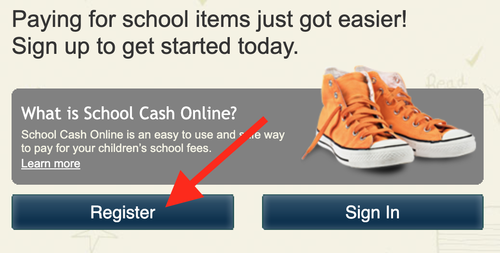
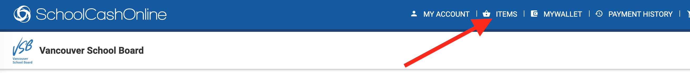
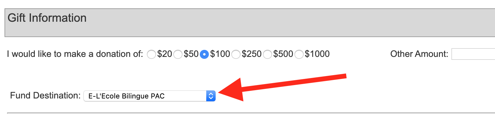

Direct Donation
Public funds cover basic education at L’École Bilingue, but as parents and guardians we directly fund additional valuable education resources beyond those normally provided by the VSB and government. Most of our funds are received directly from our parent families and raised through countless volunteer hours and dedicated efforts on programs like the Pizza and Sushi Lunch.
Where do the funds go?
As outlined in our annual PAC Budget, funds raised are targeted in a number of ways including investments in:- Arts and Cultural Programs for the entire school (Author visits/performances)
- Sports equipment, fitness programs (e.g. new jerseys for our school teams)
- Science workshops
- Building up our technological resources (tablets/laptops)
- Supplementing classroom learning resources (books and supplies etc.)
- Camp Sasamat (keeping the camp affordable)
- School Growth and other programs and initiatives like EarthBites
Why Direct Donation
Direct Donation is an annual, voluntary, confidential contribution with a suggested amount per child ($100) that allows us to significantly reduce the number of small fundraisers undertaken and retain only those that are efficient and significant in return for the hours invested as well as those that contribute to our community. The more funds we receive through Direct Donation the less we will have to fundraise to support programs and the fewer donation solicitations parents will receive throughout the year.
Direct donation is also a great way for parents to contribute to school activities who are unable to make time for volunteering during the school day.
Donate!
The easiest way is through SchoolCashOnline. We've outlined instructions below.Using SchoolCashOnline
The VSB has gone to online payments, including direct donations for PACs.
Hopefully you already have an account at SchoolCashOnline. This is the same account as you use to pay school fees, etc. If you haven’t set it up yet, it is very easy.
If you need to set up a new account click “Register”.
Then follow the instructions to register.
Once you have an account set up
Whether you registered a new account, or are using an existing account, sign in now.
In the top right, choose "Items".
Then, click on "Make A Donation".

Then, scroll down, select the amount you want to donate. Be sure to select "E-L'Ecole Bilingue PAC" otherwise the PAC will not receive your donation. 
Once you’ve entered your payment information and paid, you will receive a tax receipt from the VSB delivered to your email.
The generosity of the L’Ecole Bilingue parent community, both in direct donations and volunteering of their time, are truly unmatched. Thank you all for your consideration and care of our school and children.
By Cheque
While it is much faster and easier to use SchoolCashOnline, we are able to accept donations by cheque again this year. You can leave a cheque in the PAC mailbox in the office, made out to "L'Ecole Bilingue PAC". We will need to get in touch to collect name and various contact information in order to provide this information to the school board so that they can issue the tax receipt.